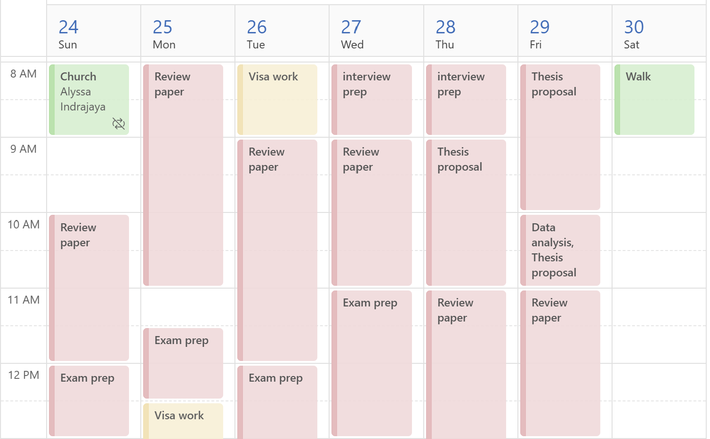
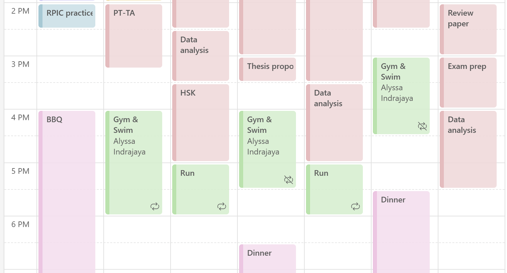
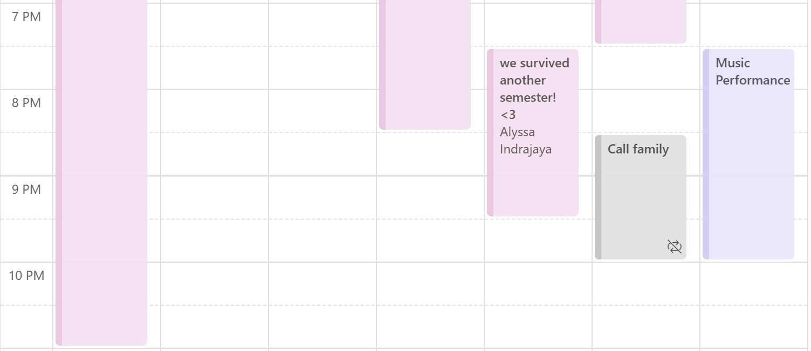

On Blocking Out Calendars
As I was preparing for my PhD Qualifying Exam, one challenge I ran into was managing my to-do lists. I would look at all the things I had to do, sigh, and postpone them to the next day. So, one time management strategy I started using was blocking out my calendar. The day before, I would put all the things I had to do into my calendar so that the next day, there was a designated time to work on each task.
This is somewhat reminiscent of the Pomodoro Method, where you would ideally work for 45 minutes and rest for 15 minutes. I tried that for a bit, but the issue I had was that I would often be so deep in the zone that when the 45-minute timer went off, I would still be in the flow and have to force myself to stop.
After much trial and error, my calendar began to look something like this:

I ended up scheduling around 2 hours for each task. If I finished a task early, I would take the remaining time to rest. Similarly, if a task took longer than expected, I would simply extend the calendar block to accommodate it.
I think what I appreciate most about time blocking is that it gives me a more realistic picture of how much time and effort each task requires. The problem with to-do lists is that not all tasks are created equal. Some take 15 minutes, while others could take an entire day. Yet, on a to-do list, they all appear as just one item. I could spend an entire day preparing for tutorials, and yes, that's technically just one item on my to-do list, but it's so much more than that.
You'll also notice that I block out time on my calendar for non-negotiables, such as going to the gym, swimming, or calling family. I set these as recurring appointments so that I don't neglect other areas of my life.


How do you use your calendar?